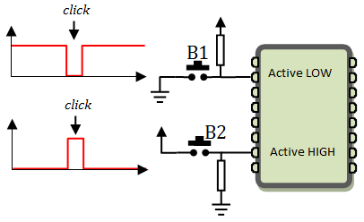

E/S Numériques
Définition
Une E/S numérique ne peut prendre que deux états: LOW
(0V) ou HIGH (5V)
Elle peut fonctionner soit en sortie
soit en entrée
Direction d'une E/S
Pour choisir entre le mode sortie ou le mode entrée, on utilise la fonction pinMode()
- pinMode(pin, state)
- Permet de configurer une E/S numérique en Entrée ou en Sortie
- pin: numéro de l'E/S
- state: INPUT pour Entrée, OUTPUT pour Sortie
Sortie Numérique
Une patte doit être configurée en sortie quand c'est le programme qui doit effectuer une action sur un équipement externe comme une LED ou un moteur ...
Pour fixer l'état d'une sortie on utilise la fonction digitalWrite()
- digitalWrite(pin, state)
- Permet de forcer une sortie au niveau logique haut (5V) ou au niveau logique bas (0V)
- pin: numéro de l'E/S
- state: HIGH pour le niveau haut, LOW pour le niveau bas
Le programme Blink
Le meilleur exemple pour illustrer la commande d'une sortie numérique est le programme Blink. C'est le "Hello World" des débutants. Ce programme fait clignoter la LED L présente sur la carte Arduino.
Sur l'Arduino UNO, la LED est branchée sur la patte n° 13, ce n'est pas le cas sur les autres cartes, pour cette raison, on utilise la constante LED_BUILTIN qui prend le bon numéro en fonction de la carte choisie dans le menu tools. Si vous préférez en brancher une autre, vous pouvez le faire comme indiqué sur l'image ci-contre. Attention, ne branchez pas une LED sans résistance, vous risquez de détruire la carte Arduino.
Si vous utilisez l'IDE Arduino, le programme Blink se trouve dans: Fichier → Examples → Basics → Blink
Sinon vous pouvez tout simplement commencer un nouveau programme (file -> new) et copier coller le programme ci-dessous
LED Blink
/*
Clignoter la LED intégrée sur arduino
*/
// fonction de configuration
void setup() {
pinMode(LED_BUILTIN, OUTPUT); // configurer la broche 13 en sortie
}
// corp du programme qui se répète en boucle
void loop() {
digitalWrite(LED_BUILTIN, HIGH); // allumer la LED
delay(500); // attendre 500ms = 1/2 s
digitalWrite(LED_BUILTIN, LOW); // éteindre la LED
delay(500); // attendre 500ms = 1/2 s
}
Blink utilisant millis()
Delay() est une fonction bloquante. Lorsque qu'on appelle la fonction delay(), le programme est bloqué pendant la durée spécifiée, ce qui signifie qu'aucune autre tâche ne peut être effectuée pendant ce temps. Par exemple, un clic sur un bouton ne sera pas être détecté. En revanche, millis() permet d'éviter ce blocage car elle se contente de fournir (instantanément) le temps écoulé depuis le démarrage du programme, et l'exécution du programme se poursuit. On peut ainsi facilement implémenter des tâches concurrentes (multitâches) comme surveiller plusieurs capteurs ou réagir à des entrées du style bouton poussoir ce qui n'est pas possible avec delay()
/*
Clignoter la LED intégrée sur arduino
en utilisant la fonction millis()
*/
unsigned long Tchange, Tnow;
// fonction de configuration
void setup() {
pinMode(LED_BUILTIN, OUTPUT); // configurer la broche 13 en sortie
digitalWrite(LED_BUILTIN, LOW); // éteinte au départ
Tchange = millis(); // instant de changement
}
// corp du programme qui se répète en boucle
void loop() {
Tnow = millis(); // maintenant
// si il s'est écoulé 1/2s on permute l'état de la LED
if(Tnow - Tchange >= 500){
digitalWrite(LED_BUILTIN, !digitalRead(LED_BUILTIN));
Tchange = Tnow;
}
}
Blink 2 LEDs utilisant millis()
Dans cet exemple on va faire clignoter deux LEDs à des rythmes différents ce qui illustre clairement l'avantage de millis() sur delay(). Si vous n'êtes pas convaincu, essayer de le faire avec delay()
On va faire clignoter L1 tous les 537ms et L2 tous les 1958ms
/*
Clignoter 2 LEDs à des rythmes différents
L1 change tous les 537ms
L2 change tous les 1958ms
*/
#define L1 2 // L1 reliée à la patte 2
#define L2 3 // L2 reliée à la patte 3
unsigned long TchangeL1, TchangeL2, Tnow;
void setup() {
pinMode(L1, OUTPUT);
pinMode(L2, OUTPUT);
digitalWrite(L1, LOW); // éteinte au départ
TchangeL1 = millis(); // instant de changement
digitalWrite(L2, LOW); // éteinte au départ
TchangeL2 = millis(); // instant de changement
}
void loop() {
Tnow = millis(); // maintenant
if(Tnow - TchangeL1 >= 537){
digitalWrite(L1, !digitalRead(L1));
TchangeL1 = Tnow;
}
if(Tnow - TchangeL2 >= 1958){
digitalWrite(L2, !digitalRead(L2));
TchangeL2 = Tnow;
}
}
Signal PWM
Un signal PWM (Pulse Width Modulation) ou MLI (Modulation de largeur d'impulsion) est un signal dont le rapport cyclique TH /T est réglable.
Arduino UNO possède 6 sorties (D3, D5, D6, D9, D10 et D11) pouvant fonctionner en PWM.
Pour générer un signal PWM, on utilise la fonction analogWrite()
- analogWrite(pin, rcy)
- pin: numéro de la sortie PWM
- rcy: rapport cyclique
- 0 correspond au rapport cyclique minimal
- 255 correspond au rapport cyclique maximal
Le paramètre rcy de la fonction analogWrite() permet de varier la largeur de Th mais pas la période T. Par défaut, sur Arduino Uno, T prend les valeur ci dessous:
- Sorties D5 et D6 ===> f = 976.56 Hz, T=1.024ms
- Sorties D9,D10 ===> f = 490.20 Hz, T = 2.04ms
- Sorties D3 et D11 ===> f = 490.20 Hz, T = 2.04ms
Pour modifier la période T, il faut reconfigurer les timers TIMER0, TIMER1 ou TIMER2 en ajoutant une des lignes ci-dessous dans la fonction setup()
Pour Arduino Uno, Nano, et autres cartes utilisant ATmega 8, 168 ou 328
//--------------fréquences PWM sur les broches D5 & D6 -----------------------
TCCR0B = TCCR0B & B11111000 | B00000001; // f = 62500.00 Hz, T = 0.016ms
TCCR0B = TCCR0B & B11111000 | B00000010; // f = 7812.50 Hz, T = 0.128ms
TCCR0B = TCCR0B & B11111000 | B00000011; // f = 976.56 Hz, T = 1.024ms (*)
TCCR0B = TCCR0B & B11111000 | B00000100; // f = 244.14 Hz, T = 4.096ms
TCCR0B = TCCR0B & B11111000 | B00000101; // f = 61.04 Hz, T = 16.383ms
//--------------Set PWM frequency for D9 & D10 ------------------------------
TCCR1B = TCCR1B & B11111000 | B00000001; // f = 31372.55 Hz, T = 0.032ms
TCCR1B = TCCR1B & B11111000 | B00000010; // f = 3921.16 Hz, T = 0.255ms
TCCR1B = TCCR1B & B11111000 | B00000011; // f = 490.20 Hz, T = 2.04ms (*)
TCCR1B = TCCR1B & B11111000 | B00000100; // f = 122.55 Hz, T = 8.16ms
TCCR1B = TCCR1B & B11111000 | B00000101; // f = 30.64 Hz, T = 32.637ms
//------------- Set PWM frequency for D3 & D11 ------------------------------
TCCR2B = TCCR2B & B11111000 | B00000001; // f = 31372.55 Hz, T = 0.032ms
TCCR2B = TCCR2B & B11111000 | B00000010; // f = 3921.16 Hz, T = 0.255ms
TCCR2B = TCCR2B & B11111000 | B00000011; // f = 980.39 Hz, T = 1.020ms
TCCR2B = TCCR2B & B11111000 | B00000100; // f = 490.20 Hz, T = 2.04ms (*)
TCCR2B = TCCR2B & B11111000 | B00000101; // f = 245.10 Hz, T = 4.080ms
TCCR2B = TCCR2B & B11111000 | B00000110; // f = 122.55 Hz, T = 8.16ms
TCCR2B = TCCR2B & B11111000 | B00000111; // f = 30.64 Hz, T = 32.637ms
Pour Arduino Mega1280, Mega2560, MegaADK et autres cartes utilisant ATmega1280 ou ATmega2560
//------------- Set PWM frequency for D4 & D13 ------------------------------
TCCR0B = TCCR0B & B11111000 | B00000001; // f = 62500.00 Hz, T = 0.016ms
TCCR0B = TCCR0B & B11111000 | B00000010; // f = 7812.50 Hz, T = 0.128ms
TCCR0B = TCCR0B & B11111000 | B00000011; // f = 976.56 Hz, T = 1.024ms (*)
TCCR0B = TCCR0B & B11111000 | B00000100; // f = 244.14 Hz, T = 4.096ms
TCCR0B = TCCR0B & B11111000 | B00000101; // f = 61.04 Hz, T = 16.383ms
//------------- Set PWM frequency for D11 & D12 -----------------------------
TCCR1B = TCCR1B & B11111000 | B00000001; // f = 31372.55 Hz, T = 0.032ms
TCCR1B = TCCR1B & B11111000 | B00000010; // f = 3921.16 Hz, T = 0.255ms
TCCR1B = TCCR1B & B11111000 | B00000011; // f = 490.20 Hz, T = 2.04ms (*)
TCCR1B = TCCR1B & B11111000 | B00000100; // f = 122.55 Hz, T = 8.16ms
TCCR1B = TCCR1B & B11111000 | B00000101; // f = 30.64 Hz, T = 32.637ms
//------------- Set PWM frequency for D9 & D10 ------------------------------
TCCR2B = TCCR2B & B11111000 | B00000001; // f = 31372.55 Hz, T = 0.032ms
TCCR2B = TCCR2B & B11111000 | B00000010; // f = 3921.16 Hz, T = 0.255ms
TCCR2B = TCCR2B & B11111000 | B00000011; // f = 980.39 Hz, T = 1.020ms
TCCR2B = TCCR2B & B11111000 | B00000100; // f = 490.20 Hz, T = 2.04ms (*)
TCCR2B = TCCR2B & B11111000 | B00000101; // f = 245.10 Hz, T = 4.080ms
TCCR2B = TCCR2B & B11111000 | B00000110; // f = 122.55 Hz, T = 8.16ms
TCCR2B = TCCR2B & B11111000 | B00000111; // f = 30.64 Hz, T = 32.637ms
//------------- Set PWM frequency for D2, D3 & D5 ---------------------------
TCCR3B = TCCR3B & B11111000 | B00000001; // f = 31372.55 Hz, T = 0.032ms
TCCR3B = TCCR3B & B11111000 | B00000010; // f = 3921.16 Hz, T = 0.255ms
TCCR3B = TCCR3B & B11111000 | B00000011; // f = 490.20 Hz, T = 2.04ms (*)
TCCR3B = TCCR3B & B11111000 | B00000100; // f = 122.55 Hz, T = 8.16ms
TCCR3B = TCCR3B & B11111000 | B00000101; // f = 30.64 Hz, T = 32.637ms
//------------- Set PWM frequency for D6, D7 & D8 ---------------------------
TCCR4B = TCCR4B & B11111000 | B00000001; // f = 31372.55 Hz, T = 0.032ms
TCCR4B = TCCR4B & B11111000 | B00000010; // f = 3921.16 Hz, T = 0.255ms
TCCR4B = TCCR4B & B11111000 | B00000011; // f = 490.20 Hz, T = 2.04ms (*)
TCCR4B = TCCR4B & B11111000 | B00000100; // f = 122.55 Hz, T = 8.16ms
TCCR4B = TCCR4B & B11111000 | B00000101; // f = 30.64 Hz, T = 32.637ms
//------------- Set PWM frequency for D44, D45 & D46 ------------------------
TCCR5B = TCCR5B & B11111000 | B00000001; // f = 31372.55 Hz, T = 0.032ms
TCCR5B = TCCR5B & B11111000 | B00000010; // f = 3921.16 Hz, T = 0.255ms
TCCR5B = TCCR5B & B11111000 | B00000011; // f = 490.20 Hz, T = 2.04ms (*)
TCCR5B = TCCR5B & B11111000 | B00000100; // f = 122.55 Hz, T = 8.16ms
TCCR5B = TCCR5B & B11111000 | B00000101; // f = 30.64 Hz, T = 32.637ms
Exemple PWM
Dans cet exemple on va faire varier le rapport cyclique d'un signal PWM entre 0 et 1. Cela peut servir par exemple à démarrer un moteur CC et l'accélérer graduellement
/*
* On va générer un signal PWM de frequence 61 Hz sur la pate 5
* Cette fréquence est bien adaptée à la commande de moteurs CC
* avec la fonction analogWrite(pin,pwm), le rapport cyclique
peut être ajusté entre pwm=0 et pwm=255
* on va varier le rapport cyclique de 0 à 255
avec un pas pwmstep tout les timestep (ms)
*/
#define pwmpin 5
#define pwmstep 15 // 255 divisible par 15
#define timestep 500
void setup() {
TCCR1B = TCCR1B & B11111000 | B00000100; // f=61Hz, T=16.383ms
Serial.begin(9600);
}
void loop() {
Serial.println("\n========Accélération===========");
unsigned long Tdebut = millis();
for(int pwm=0; pwm <= 255; pwm += pwmstep){
analogWrite(pwmpin,pwm);
Serial.print("pwm = "+String(pwm));
Serial.print(" ---> Rapport cyclique = ");
Serial.println(pwm/255.0);
delay(timestep);
}
unsigned long Tfin = millis();
Serial.print("\nTemps de balayage = ");
Serial.print((Tfin-Tdebut)/1000.0);
Serial.println(" secondes");
Serial.println("\n========Décélération===========");
Tdebut = millis();
for(int pwm=255; pwm >=0; pwm -= pwmstep){
analogWrite(pwmpin,pwm);
Serial.print("pwm = "+String(pwm));
Serial.print(" ---> Rapport cyclique = ");
Serial.println(pwm/255.0);
delay(timestep);
}
Tfin = millis();
Serial.print("\nTemps de balayage = ");
Serial.print((Tfin-Tdebut)/1000.0);
Serial.println(" secondes");
}
Entrées Numériques
Les broches d'entrée numérique sont utilisées pour détecter l'état du signal électrique appliqué dessus. Elles peuvent détecter deux états : haut (HIGH) ou bas (LOW). Elles sont utilisées pour lire des commutateurs, des boutons-poussoirs, des capteurs numériques, etc.
Travailler avec une entrée numérique peut s'avérer un peu plus ardu qu'avec une sortie numérique. Surtout quand il faut détecter les transitions et gérer les rebonds des bouton poussoirs
Dans la suite, je vais surtout considérer le cas du bouton poussoir. La figure montre les deux façons de le brancher, Active LOW et Active HIGH.
Nous allons surtout utiliser le branchement Active LOW, on peut utiliser une résistance de pullup externe ou activer la résistance de pullup interne de l'Arduino
Pour configurer la broche en mode entrée et choisir le type de pullup on utilise la fonction pinMode()
- pinMode(pin, INPUT ) ==> Entrée avec pullup externe
- pinMode(pin, INPUT_PULLUP ) ==> Entrée avec pullup interne
Pour lire l'état d'une entrée on utilise la fonction digitalRead()
- val = digitalRead(pin)
- pin: numéro de l'entrée
- val: variable qui reçoit l'état 0 ou 1 de l'entrée
Exemple: Contrôler une LED par un bouton
- A chaque clic sur le bouton, on change l'état de la LED
- Le bouton n'a pas de résistance de pullup, don il faudra activer le pullup interne
- On change l'état de la LED au début du clic, c'est à dire au moment de la transition descendante
- On suppose que le bouton n'a pas de rebonds
- A chaque passage dans le fonction loop(), on fait une nouvelle lecture du bouton et on compare avec la précédente, Si précédente=1 et nouvelle=0 => Transition descendante
#define BP_PIN 4
#define LED_PIN 3
int8_t BP_OLD, BP_NEW,LED_STATE;
void setup() {
pinMode(BP_PIN, INPUT_PULLUP); // bouton
pinMode(LED_PIN,OUTPUT); // LED
digitalWrite(LED_PIN,LOW); // LED éteinte au début
LED_STATE = 0;
BP_OLD = digitalRead(BP_PIN); // première lecture du bouton
}
void loop() {
BP_NEW = digitalRead(BP_PIN); // nouvelle lecture bouton
if(BP_OLD - BP_NEW == 1){ // si transition descendante
LED_STATE = 1 - LED_STATE;
digitalWrite(LED_PIN,LED_STATE); // changer l'état de la LED
}
BP_OLD = BP_NEW;
}
Exemple: Deux boutons pour contrôler deux LEDs
- Le bouton B1 contrôle la LED L1
- Le bouton B2 contrôle la LED L2
#define B1 2
#define B2 4
#define L1 5
#define L2 6
int8_t B1_OLD, B1_NEW, B2_OLD, B2_NEW,L1_STATE, L2_STATE;
void setup() {
pinMode(B1, INPUT_PULLUP);
pinMode(B2, INPUT_PULLUP);
pinMode(L1,OUTPUT);
pinMode(L2,OUTPUT);
digitalWrite(L1,LOW);
digitalWrite(L2,LOW);
L1_STATE = 0;
L2_STATE = 0;
B1_OLD = digitalRead(B1);
B2_OLD = digitalRead(B2);
}
void loop() {
B1_NEW = digitalRead(B1);
if(B1_OLD - B1_NEW == 1){
L1_STATE = 1 - L1_STATE;
digitalWrite(L1,L1_STATE);
}
B1_OLD = B1_NEW;
B2_NEW = digitalRead(B2);
if(B2_OLD - B2_NEW == 1){
L2_STATE = 1 - L2_STATE;
digitalWrite(L2,L2_STATE);
}
B2_OLD = B2_NEW;
}
Le problème des rebonds
Les boutons poussoir est les interrupteurs sont sujet à des rebondissements mécaniques. Quand on clique sur un bouton, au lieux d'obtenir une impulsion propre comme ça:
On obtient plutôt quelque chose qui ressemble à ça. Je n'ai pris en compte que les rebonds du début du clic, ce qui est le cas pour la plupart des boutons
La meilleure façon de traiter les rebonds est de les filtrer par un montage électronique. On peut aussi essayer de les gérer par software. Il est très difficile de mettre au point un programme efficace à 100% à cause du caractère aléatoire des rebonds et la différence de comportement des boutons
Je propose ci-dessous une solution simple qui marche assez bien. Chaque fois que l'on détecte une transition descendante, on considère qu'elle valide si elle est suffisamment éloignée la transition valide précédente
#define BP_PIN 4
#define LED_PIN 3
int8_t BP_OLD = 1, BP_NEW,LED_STATE = 0;
unsigned long TTV = 0, TNOW; // Instant Transition Valide, instant actuel
void setup() {
pinMode(BP_PIN, INPUT_PULLUP); // bouton
pinMode(LED_PIN,OUTPUT); // LED
digitalWrite(LED_PIN,LED_STATE); // LED éteinte au départ
}
void loop() {
BP_NEW = digitalRead(BP_PIN); // nouvelle lecture bouton
TNOW = millis(); // TNOW = Maintenant
if(BP_OLD - BP_NEW == 1 && TNOW - TTV > 50){
LED_STATE = 1 - LED_STATE;
digitalWrite(LED_PIN,LED_STATE); // changer l'état de la LED
TTV = TNOW; // Mettre à jour le temps de la dernière transition
}
BP_OLD = BP_NEW;
}